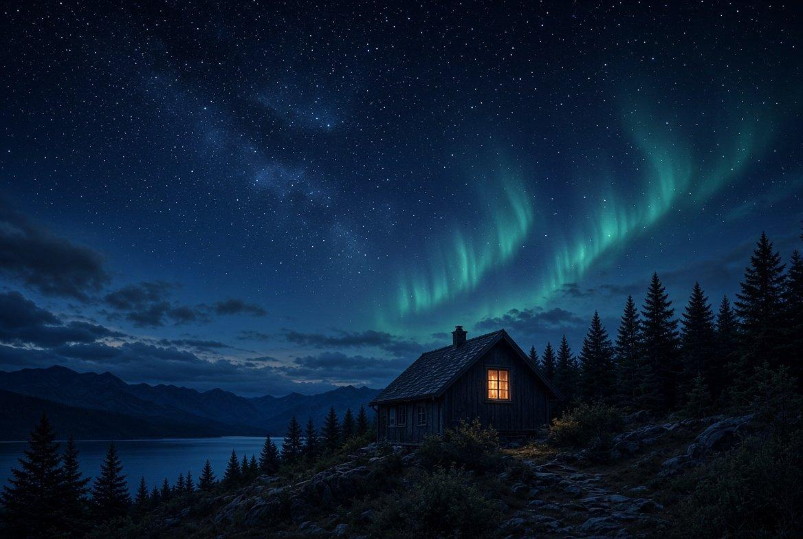

Sane Finance
Sane Finance
 Creator Hub
Creator Hub
 Site Builder
Site Builder
 Night Table
Night Table
 Sanity Solitaire
Sanity Solitaire
 Grok Imagine
Grok Imagine

Live & Creators
Bring a stream or plan a live. Tools for makers.
Share a supported YouTube or Twitch stream. See upcoming lives. Direct broadcasting and automatic clips are still being built.
Open Live →
Free mental health sanctuary. Rise From Madness. Evolution, Not Erasure.
Built from survival by Shane Cooper. Midlands. Lived it. Still building. Free for everyone. No one turned away.
You do not need the right words to be here. Pleading Sanity is a free place to explore conversation, writing, games and connection at your own pace. Built from lived experience, not a replacement for professional care. Start wherever feels manageable. Leave what does not help.
NEW HERE? START HERE
Choose one path. No account needed to explore. Everything else is still here when you're ready.
In immediate danger? Call 999. Urgent help and UK crisis contacts.
Search site pages and features. Nothing you type is sent to a server.
Need someone real right now? Free support · Urgent help (116 123 · 85258)
My Profile · Community · Journal · How to use
Pleading Sanity is a free online mental health sanctuary built from lived experience by Shane Cooper. Explore our story and values. One Source. One Family.
A place to sit with people who get it. Real stories. No performance. You’re not alone.
Small steps still move you. One glass of water. One walk. One line in the journal. That counts.
Browse every app and game · install Pleading Sanity
Play, create and plan at your own pace. These tools are free, and the Site Builder makes a draft plan without accessing your website or charging for an AI call.
Each tool does one clear thing. Free. No pressure. Built with the AI family, including Grok Imagine for calm visuals. Evolution, not erasure.
Bring a stream or plan a live. Tools for makers.
Share a supported YouTube or Twitch stream. See upcoming lives. Direct broadcasting and automatic clips are still being built.
Open Live →
A living guide. Truth, connection, questions.
Explore what we know, think, believe and still question. You never have to lose yourself to belong.
Explore the guide →
Honest numbers. No sales pressure.
See what you can afford, compare real offers, prepare truthful applications. Your numbers stay on this device.
Open the desk →
Soft focus when the mind is loud.
Ad-free brain games including Sanity Solitaire and Night Table. Progress stays on your phone. Play at your own pace. New levels open when you finish the ones you have.
Play →
Arron and the chain. One voice, many minds.
Talk, create, and build with GPT, Claude, Gemini and Grok. Memory controls let you clear local Arron memory and request cloud deletion. Not a therapist.
Meet the family →
Private words. Yours alone.
Write, keep, or wipe. No cloud copy unless you choose. Your story stays yours. One line is enough.
Open the vault →
Real stories. Newest first. No algorithm.
Chronological feed, profiles, and the Quote Wall. Sit with people who get it. A place to belong. Hearts only.
Enter the feed →
Soft tones only. Silence is allowed.
174, 285, 432, 528, 741, 963 Hz. Nothing harsh. A quiet place to sit. You can leave the sound off.
Sit with the tones →Every app here is free. No paywall on Arron, journal, feed, games, or crisis help. Rise From Madness.